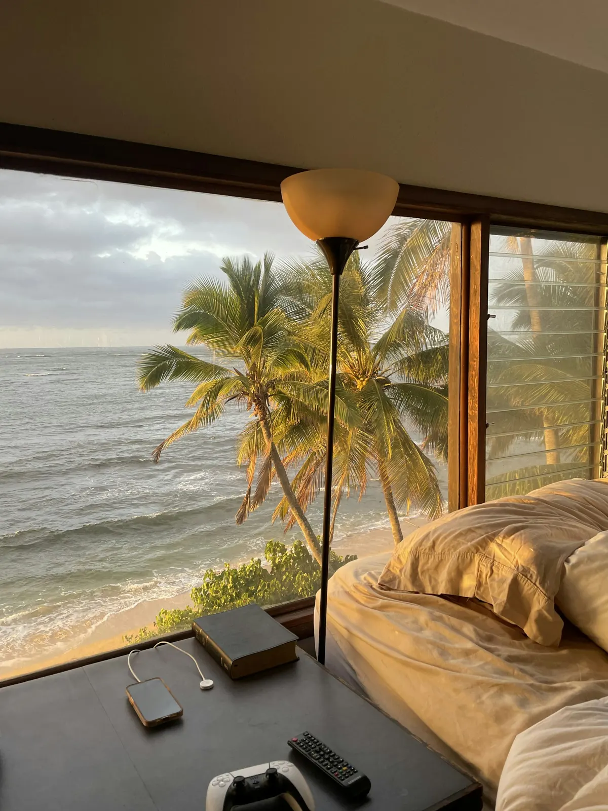

FLORIANÓPOLIS
SEU PRÓXIMOendereço.
Casas e apartamentos de alto padrão na Ilha.
12 anos de mercado, 340 famílias atendidas.
Avenida Beira-Mar Norte, Florianópolis
EU ACHO Oimóvel certo.
Eu visito antes. Você só vê
o que vale a sua tarde.
Sou a Ana Ribeiro, corretora em Florianópolis há 12 anos. Trabalho com casas frente-mar, coberturas e apartamentos de alto padrão, de Jurerê Internacional à Lagoa, com discrição e a documentação conferida antes da proposta.
ANA RIBEIRO IMÓVEIS · CRECI DE EXEMPLO 00000-F
Conheça o trabalho da Ana ↗01 / DESTAQUES DA SEMANA
Próximo capítulo ↓


Casa frente-mar com píer
01 / 06 Cacupé · 420 m² · 4 suítes · tour 360°
R$ 7.800.000
Cobertura duplex com piscina
02 / 06 Jurerê Internacional · 286 m² · 3 suítes · tour 360°
R$ 5.200.000
Casa com vista para a Lagoa
03 / 06 Lagoa da Conceição · 260 m² · 3 suítes · tour 360°
R$ 3.450.000
Apartamento 3 suítes de frente para a baía
04 / 06 Beira-Mar Norte · 168 m² · 3 suítes · tour 360°
R$ 2.980.000
Casa açoriana restaurada
05 / 06 Santo Antônio de Lisboa · 190 m² · 1 suíte
R$ 2.150.000
Apartamento garden perto do mar
06 / 06 Campeche · 128 m² · 1 suíte
R$ 1.480.000
ROLE PARA VER O PRÓXIMO · TODOS OS IMÓVEIS ↗
ANA RIBEIRO / A ILHA
DESÇA PARA EXPLORAR ↓BAIRROS · PREÇO · VIDA
Uma nova
perspectiva.
Oito bairros da Ilha,
com o metro quadrado de cada um.
- Jurerê InternacionalRuas largas, casas de alto padrão e o mar mais calmo do norte da IlhaR$ 22.400/m²
- CacupéCasas na beira da baía, pôr do sol de frente e muito silêncioR$ 18.600/m²
- Santo Antônio de LisboaVila açoriana com calçadão, ostras e casario do século XIXR$ 12.600/m²
- Beira-Mar NorteApartamentos de frente para a baía, com tudo a pé e a pista de caminhada na portaR$ 17.900/m²
- CentroA ponte Hercílio Luz, o mercado e tudo a péR$ 12.100/m²
- Lagoa da ConceiçãoMorros, mata e água para todo lado, com as praias do leste a 10 minutosR$ 13.800/m²
- CampechePraia longa, ciclovia e casas com quintal perto do aeroportoR$ 11.300/m²
- ItacorubiPrédios novos perto da universidade e do shoppingR$ 11.800/m²
01 / 08
Jurerê Internacional
Ruas largas, casas de alto padrão e o mar mais calmo do norte da Ilha · R$ 22.400/m²
02 / BAIRROS
Escolha o bairro no mapa.
Toque num bairro para ver o jeito de viver, para quem ele combina, o metro quadrado e os imóveis que eu tenho lá.
bairros do mapa outros bairros com imóveis
Mapa ilustrativo. Valores de exemplo. Os seis bairros em detalhe ↗


O JEITO DA ANA
É sobre
se sentir em casa.
Antes da primeira visita, eu entendo a sua rotina e o seu momento.
Mostrou só imóveis que cabiam no nosso financiamento. Visitamos 4 e fechamos o terceiro.Bruna e Diego, Campeche · exemplo
Visita só do que faz sentido, com comprador que já tem os recursos.
Vendeu nossa cobertura em 23 dias, pelo preço que ela tinha avaliado.Família Kuster, Beira-Mar Norte · exemplo
Banco, certidões e cartório por minha conta, até a escritura.
Cuidou da papelada do banco do começo ao fim. Eu só assinei.Sr. Valdir, Santo Antônio · exemplo
A ILHA, DE PERTO.
03 / NÚMEROS
O seu lugar.
No seu tempo.
- 340
- famíliascom a chave na mão
- 41dias
- tempo médiode venda
- 12anos
- de CRECI ativoem Florianópolis
- 410mi
- em imóveis vendidosdesde 2014 (exemplo)
04 / VENDAS REALIZADAS
Imóveis que já mudaram de dono.
Algumas vendas dos últimos anos. Valores e prazos de exemplo, para demonstração.
| Imóvel | Bairro | Valor | Vendido em | Ano |
|---|---|---|---|---|
| Casa frente-mar | Cacupé | R$ 9,4 milhões | 52 dias | 2026 |
| Casa em condomínio | Jurerê Internacional | R$ 6,2 milhões | 34 dias | 2026 |
| Cobertura duplex | Beira-Mar Norte | R$ 4,8 milhões | 41 dias | 2025 |
| Casa com vista para a Lagoa | Lagoa da Conceição | R$ 3,1 milhões | 29 dias | 2025 |
| Casa açoriana | Santo Antônio de Lisboa | R$ 2,4 milhões | 63 dias | 2025 |
| Apartamento 4 suítes | Beira-Mar Norte | R$ 3,9 milhões | 38 dias | 2025 |
| Casa de praia | Campeche | R$ 2,2 milhões | 27 dias | 2024 |
| Terreno frente-mar | Jurerê Internacional | R$ 7,5 milhões | 88 dias | 2024 |
A Ana visitou doze casas antes de nos mostrar três. Compramos a segunda, em Cacupé, e ela cuidou de tudo enquanto a gente ainda morava em São Paulo.
Vendeu a cobertura pelo valor que ela avaliou, sem desconto, para um comprador que já tinha o dinheiro aprovado.
Morando em Lisboa, fiz as visitas por vídeo. Ela mostrava cada canto, abria armário, testava a água do chuveiro. Só vim para a escritura.
Descobriu uma pendência na matrícula que o outro corretor não tinha visto. Resolveu com o advogado antes da proposta.
Discreta do começo ao fim. Nada de placa, nada de anúncio: ela apresentou a casa só para três compradores certos.
Mostrou só imóveis que cabiam no nosso financiamento. Visitamos quatro e fechamos o terceiro.
DEPOIMENTOS DE EXEMPLOQuero vender com a Ana ↗
05 / COMPRA ACOMPANHADA
Do primeiro café à chave.
Seis etapas, todas comigo. Você sabe o próximo passo antes de ele chegar.
- 01
Conversa
Uma hora para entender quem vai morar, como é a rotina e quanto quer investir. Pode ser por vídeo.
- 02
Recursos
Simulação do financiamento ou comprovação dos recursos, para negociar com força de compra à vista.
- 03
Curadoria
Eu visito antes. Você recebe só os imóveis que passaram, com vídeo sem cortes e a matrícula.
- 04
Visitas
Presenciais ou por chamada de vídeo, no horário que você escolher, inclusive no fim de semana.
- 05
Proposta e checagem
Negociação por escrito e checagem com advogado: matrícula, certidões, débitos, marinha e laudêmio.
- 06
Escritura e chaves
ITBI, cartório e registro acompanhados por mim. Eu entrego a chave na sua mão.
06 / FINANCIAR
Quanto cabe
no seu bolso.
Financiamento pela tabela SAC, juros de 11,49% ao ano e parcela de até 30% da renda.
Mexa nos números e veja quais destaques já cabem.

Simulação ilustrativa
Você compra até R$ 706.000
07 / VENDER
O seu imóvel
encontra comprador.
Avaliação em 24 horas, comparada com vendas reais da região. Venda discreta, sem placa se você preferir, e visita só de quem tem os recursos.
07 / COMO EU VENDO
Próximo capítulo ↓
Avaliação em 24 horas
01 / 04 Visita e comparação com 1.900 vendas reais da região
Fotos e vídeo profissionais
02 / 04 E anúncio nos portais no mesmo dia
Visitas só com comprador aprovado
03 / 04 Crédito aprovado pelo banco, sem curioso na sua sala
Papelada até a escritura
04 / 04 Certidões, banco e cartório por minha conta
ROLE PARA DESCOBRIR O PRÓXIMO PASSO
08 / AVALIAÇÃO
Quanto vale
o seu imóvel.
Estimativa pelo preço médio do metro quadrado vendido no bairro. A avaliação completa tem visita e sai em 24 horas. Avaliação detalhada, com idade, vagas e estado ↗
5 MIN DE LEITURAOnde morar em Florianópolis
Norte, leste, sul ou baía: o que muda na rotina, no trânsito e no preço de cada região da Ilha.
Ler o artigo ↗ 4 MIN DE LEITURA
4 MIN DE LEITURAJurerê ou Cacupé?
Os dois bairros mais procurados por quem compra casa acima de R$ 3 milhões, lado a lado.
Ler o artigo ↗ 5 MIN DE LEITURA
5 MIN DE LEITURAComprar frente-mar sem susto
Terreno de marinha, laudêmio, maresia e vista permanente: o checklist que eu uso em toda compra na orla.
Ler o artigo ↗10 / AGENDAR VISITA
Escolha o imóvel, o dia e a hora.
A mensagem sai pronta para o meu WhatsApp, com o imóvel e o horário. Visita presencial ou por chamada de vídeo.